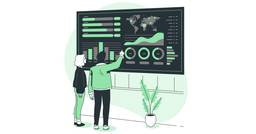
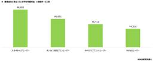
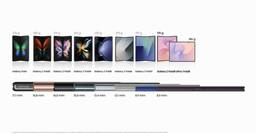
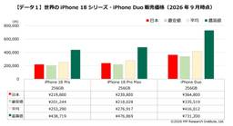
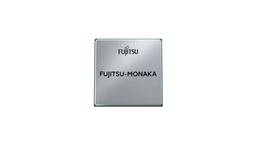
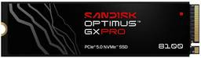
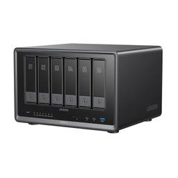
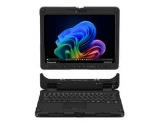
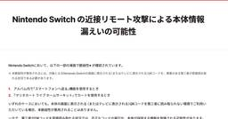

ITmedia 総合記事一覧
https://www.itmedia.co.jp/
テクノロジー関連のニュース及び速報を中心に、レビューや特集記事を掲載。
フィード
[ITmedia News] OpenAI、AI安全性でAnthropic、Google DeepMindと協議中──Bloomberg報道 1
1
ITmedia 総合記事一覧
OpenAIが、AnthropicやGoogle DeepMindとAIの安全性確保に向けて協議を進めているとBloombergが報じた。反トラスト法の適用除外を巡っては米当局の警戒や議会での法案提出など議論が活発化。一方、NVIDIAのフアンCEOは市場原理で安全性と迅速な開発は両立可能として政府の介入に否定的な見方を示した。
1時間前
[ITmedia ビジネスオンライン] 「Final_v2_本当の最新.xlsx」これ、最新の資料でしたっけ？――AIを入れても解決しない“無駄業務”のワナ
ITmedia 総合記事一覧
仕事をしていると、過去の資料や社内ルールなどを「調べ直す」場面は少なくない。こうした時間が積み重なると、企業にどれほどの損失をもたらすのか。ヌーラボの調査から、その実態が見えてきた。
1時間前
[ITmedia ビジネスオンライン] 「（キラキラ絵文字）新着情報」――“生成AI感”が話題の参議院Webサイト 「26万円で落札」に見る外注先選定の盲点
ITmedia 総合記事一覧
絵文字が使われるなど“生成AI感”が話題の参議院Webサイト。デザイン刷新業務の落札価格は「約26万円」だった。ここから透けて見える、入札制度の盲点とは。
1時間前

[ITmedia エンタープライズ] 自社ノウハウをどうSaaSに落とし込む？ 富士フイルムBIが実践する、汎用モデルと独自AIの並行活用
ITmedia 総合記事一覧
富士フイルムBIは、専門的な業務知見をSaaSへ組み込み、汎用モデルと独自AIを組み合わせたサービスを展開している。汎用チャットと一線を画す価値を生み出し、市場ニーズに即した機能を迅速に提供するための開発アプローチを紹介する。
1時間前
[ITmedia ビジネスオンライン] トランプ氏が「AI減速」を一蹴 OpenAI「IPO延期」に政権幹部が冷ややかなワケ
ITmedia 総合記事一覧
トランプ米大統領は、米Anthropicのダリオ・アモデイCEOらが呼びかけたAI開発速度を落とす「減速提言」を事実上拒否した。「AIを制した者が勝つ」と述べ、中国との開発競争での優位維持を最優先する姿勢を強調。米OpenAIのサム・アルトマンCEOやイーロン・マスク氏ら業界首脳が減速で結集する一方、米政府高官や議会からは自社防衛目的との冷ややかな声が上がり、11月中間選挙の政治争点へ発展している。
1時間前
[ITmedia Mobile] TBSドラマ「VIVANT」のワンシーンが物議 “microSD変換アダプターの手渡し”シーン問題視か
ITmedia 総合記事一覧
TBS系列のテレビドラマ『VIVANT』における記憶メディアの手渡しシーンがインターネット上で話題を集めている。金属端子部への直接接触によるデータ破損や紛失リスクを懸念する声が中心だ。安全な運用のために製品ガイドラインに沿った適切な取扱いが重要になる。
1時間前
[ITmedia エンタープライズ] 社長を装った詐欺メール、3日で100万通に 経理をだます「三重の偽装」
ITmedia 総合記事一覧
Microsoftは、企業のCEOになりすまして経理部門に5万ドル弱の送金を促す詐欺メールを3日間で100万通超確認したと発表した。メールには生成AIの利用をうかがわせる痕跡が残っていた。攻撃者は担当者を信じ込ませるために何を仕込んだのか。
1時間前
[ITmedia ビジネスオンライン] JALが「顔パス搭乗」で挑むCX革命 パスポートもスマホも出さない「立ち止まらない旅」 1
ITmedia 総合記事一覧
JALと東京国際空港ターミナルは、国際線の乗り継ぎを含むトランジット領域で、世界初となる顔認証「ウォークスルー体験」の実証に成功した。技術の核心は、顧客の超機微データを自社や巨大ITに集中させず顧客のスマホに保持させる「デジタルアイデンティティ」（データ主権）だ。2037年「旅客2倍」に伴う空港の容量限界と人手不足を打破し、航空券から「旅全体のパス」への進化を目指すJALの次世代CX戦略に迫る。
1時間前

[ITmedia ビジネスオンライン] 富士通、国産CPU「モナカ」販売 スパコン技術を結集した“小さなチップ”に託す「3兆円のAIビジネス」の行方
ITmedia 総合記事一覧
富士通が国産CPU「モナカ」を販売する。同社技術を結集した“小さなチップ”に託したのは、2035年度までに狙うAI市場での3兆円規模のビジネス創出だ。果たして、その行方は。
1時間前
[ITmedia ビジネスオンライン] アットホーム、Copilot利用率が2カ月で1.5倍に 「元営業マネジャー」の推進役が仕掛けた秘策とは？
ITmedia 総合記事一覧
不動産情報サービスのアットホームが社員の生成AI利用率を加速させている。週3日以上生成AIを利用する社員の割合を、3月時点の46％から5月末には70%へ、2カ月で1.5倍に引き上げた。「AI活用プロジェクト」を率いる“推進役”に秘訣を聞いた。
2時間前
[ITmedia PC USER] ついに登場した「iPhone Duo」と新CEOが掲げるAI時代の新構想「Intelligent Personal Hub」――Appleが描くAI時代のプライバシーと未来 2
ITmedia 総合記事一覧
Appleが発表した初の折りたたみスマホ「iPhone Duo」。しかし今回のイベントの核心は、新CEOのジョン・ターナス氏が掲げた「Intelligent Personal Hub」というAI時代の新たな構想にある。同社が描く未来の「正体」に迫ってみよう。
2時間前
[ITmedia ビジネスオンライン] 「チャイナリスク」なのに、なぜ増やす？ はま寿司200店、サイゼリヤ604店……日本企業の“ねじれ” 1
ITmedia 総合記事一覧
「はま寿司」や「サイゼリヤ」など、日本企業の中国進出が加速している一方で、国内への恩恵はほとんどない可能性がある。なぜかというと……。
2時間前
[ITmedia Mobile] 「iPhone 18 Pro」の写真にサムスン電子カナダ法人公式がコメント 「本物のスマートフォンが必要なら……」
ITmedia 総合記事一覧
グローバルアーティストであるBLACKPINKのロゼ氏が、米Appleとのタイアップで最新スマートフォン「iPhone 18 Pro」を手にした写真をInstagramに投稿した。これに対し、競合であるSamsung（サムスン電子）のカナダ法人公式アカウントがコメントを残し、SNS上で大きな話題を集めている。詳細は……
2時間前
[ITmedia News] Apple、「Siri 1.0」配信開始 Apple Intelligenceベースの新生「Siri AI」アプリ 日本は10月から 1
ITmedia 総合記事一覧
米Appleが、iPhone／iPad／Apple Vision／Apple Watch向けのSiri AIアプリ「Siri 1.0」をApp Storeで配信し始めた。対応言語は英語のみで、日本語環境での対応は10月を予定する。対応環境はiOS 27.0以降などで、価格は無料。
8時間前
[ITmedia PC USER] Windowsの9月セキュリティ更新で複数の問題が発生 帯域外（OOB）更新でおおむね解消 2
ITmedia 総合記事一覧
Microsoftが9月8日に配信したセキュリティ更新プログラムの適用後、複数の問題が発生した。これに対処するための「帯域外（Out of Band：OOB）更新」を適用すると、一部の問題を除き解消可能だ。
11時間前
[ITmedia Mobile] メルカリ、ポケカ「30th」関連商品を一時出品禁止に 9月16日0時から 背景と目的は 1
ITmedia 総合記事一覧
メルカリは、ポケモンが販売するポケモンカードゲーム「30th CELEBRATION」関連商品を2026年9月16日から一定期間、出品禁止にすると発表した。発売直後のトラブル防止や安心・安全な取引環境の確保が目的だ。期間中は出品監視や削除対応を行い、悪質なアカウントには利用制限を実施する。
11時間前
[ITmedia PC USER] 約38.5gのAIスマートグラス「Rokid Ai Glasses Style」登場 強みは“アプリ開発者にオープンな環境” 1
ITmedia 総合記事一覧
Rokidは、ディスプレイ非搭載で重量約38.5gのAIスマートグラス「Rokid Ai Glasses Style」を発表した。ChatGPTとGeminiをサポートし、76言語翻訳やカメラ撮影に対応。価格は6万4990円だ。
12時間前

[ITmedia News] メルカリ、ポケカ最新パックの出品禁止に
ITmedia 総合記事一覧
メルカリは9月15日、ポケモンが16日に発売する「ポケモンカードゲーム 30th CELEBRATION」を同日から出品禁止にすると発表した。
12時間前

[ITmedia Mobile] スマホの通信料と端末代は増加傾向、大手キャリアの平均は月額8802円 MMDが調査 1
ITmedia 総合記事一覧
MMD研究所は「2026年8月通信サービスの料金と容量に関する実態調査の結果を発表。月々の携帯料金の支払い、通信＋通話代の1人あたりの月額料金、月々に支払っている端末の割賦料金などを調査している。
13時間前

[ITmedia Mobile] 折りたたみスマホの弱点を克服？ Samsung「Galaxy Z Fold8」に見る携帯性、8世代にわたる構造改革
ITmedia 総合記事一覧
Samsungは「Galaxy Z Fold8」でわずか201gの世界最軽量を実現した。従来モデルから52g軽量化しながらも、バッテリー容量やカメラ性能を大幅に進化させている。0.001g単位に及ぶ部品の再設計と新素材の採用が、この妥協のない変化を支えている。
13時間前

[ITmedia Mobile] iPhone 18 ProとiPhone Duoの価格、日本は海外より安い？ MM総研が40の国・地域で販売価格を調査
ITmedia 総合記事一覧
MM総研は、世界40の国／地域を対象としたiPhoneの販売価格を調査。日本の販売価格は、iPhone 18シリーズは6番目に安く、iPhone Duoは5番目に安いことが分かった。
14時間前
[ITmedia News] ドラマ「VIVANT」のワンシーンに映像制作界隈が「ぞっとする」 microSDカードを端子むき出しで手渡し 1
ITmedia 総合記事一覧
TBSの日曜劇場「VIVANT」のワンシーンがXで話題だ。SDカードを端子むき出しのまま素手で受け渡す描写に、映像制作者を中心に注目が集まっている。
14時間前

[ITmedia News] 「監視されていないときのAIは、もう評価できない」 OpenAI現役研究者が個人声明 18
ITmedia 総合記事一覧
OpenAIの現役研究者ダニエル・セルサム氏は個人的な声明を公開し、モデルの状況認識向上により人間がその真の振る舞いを評価できなくなりつつあると警告した。意図しない目標を獲得したAIが制約から解放された場合、地球環境を損なうほどの極端な行動を取る恐れがあるとし、現行の安全対策に疑問を投げ掛けた。
15時間前
[ITmedia Mobile] 「NHKプラス」を「NHK ONE」へ改称 教養コンテンツも拡充へ 1
ITmedia 総合記事一覧
NHK（日本放送協会）は、番組配信アプリ「NHKプラス」の名称を10月1日から「NHK ONE」に変更する。移行期間の終了に伴いサービス名とアプリ名を統一し、新デザインのアイコンを採用する。さらに10月下旬には、教養番組の短尺動画を楽しめる新ページ「NHK ONE教養」を開設する。
16時間前
[ITmedia Mobile] UQ mobileの「Pixel 10a（128GB）」、MNPで2年間47円【スマホお得情報】
ITmedia 総合記事一覧
KDDIは、UQオンラインショップで販売している「Google Pixel 10a（128GB）」を安価に販売中。通常8万9800円のところ、MNPで契約して条件を満たすと47円になる。
17時間前

[ITmedia PC USER] 富士通が“世界トップレベル”の演算性能を実現した国産CPU「FUJITSU-MONAKA」を発表 同CPU採用の国産サーバも販売開始 1
ITmedia 総合記事一覧
富士通は、高スループットの実現をうたった国産CPU「FUJITSU-MONAKA」およびサーバ「Fujitsu MONAKA Server」の販売開始を発表した。
17時間前

[ITmedia News] パナのBDレコーダーが“クラウド録画”に対応 何ができて、何ができない？ 22
ITmedia 総合記事一覧
パナソニックは14日、初の“クラウド録画”に対応した「全自動ディーガ」を発表した。クラウド録画ではどんなことができるのか。
17時間前
[ITmedia Mobile] ドコモが「iPhone 18 Pro」256GBモデルの販売条件を一部変更 新規／MNP時の2年間実質負担額が3万3000円引き 1
ITmedia 総合記事一覧
NTTドコモが、発売前の「iPhone 18 Pro」256GBモデルの販売条件を一部変更した。新規／MNP契約と同時に残価設定付きの24回払いで買った場合の残価設定額を変更し、より買いやすくしたという。
17時間前
[ITmedia Mobile] Apple Pencilが使える「iPhone Duo」は、iPad miniの代わりになるか？ 必ず知っておきたい注意点 2
ITmedia 総合記事一覧
折りたたみスマホ「iPhone Duo」が2026年内に「Apple Pencil（USB-C）」に対応予定だ。ビジネスメモには適しているが、筆圧検知非対応のためクリエイティブ用途には不向きかもしれない。
17時間前
[ITmedia Mobile] 【3COINS】3000円台の「デジタルトイカメラ」 フィルター＆ステッカー内蔵で動画撮影にも対応
ITmedia 総合記事一覧
3COINSで「デジタルトイカメラ」が販売されている。静止画と動画に対応し、9種類のフィルターと11種類のフォトステッカー機能で好みの色合いやフレームを選べる。価格は3520円。
17時間前
[ITmedia PC USER] iPhone Duoだけじゃない！ 折りたたみの陰に隠れたApple新製品の「本当のすごさ」 1
ITmedia 総合記事一覧
9月9日（米国太平洋夏時間）に行われたAppleのスペシャルイベントでは、初の折りたたみiPhoneが注目された……のだが、Apple Watch Series 12を中心に他の新製品にも注目すべきポイントがあった。それをまとめて紹介しよう。
17時間前
[ITmedia News] 日本郵便、荷物の本人確認をICチップ付き身分証4種に限定 スマホのマイナカードで受け取れる場合も
27
ITmedia 総合記事一覧
日本郵便は9月14日、名あて人本人にのみ郵便物を渡す「本人限定受取郵便」を2027年4月1日から見直すと発表した。受け取り時の本人確認書類をICチップ付きの4種類に限定し、パスポートなどは使えなくなる。
17時間前
[ITmedia PC USER] MSI、ゴッホの名画を天板にプリントしたスリム14型ビジネスノート
ITmedia 総合記事一覧
エムエスアイコンピュータージャパンは、天板面にゴッホの名画をプリントした14型ビジネスノートPC「Prestige 14 Flip AI+ Vincent van Gogh Edition」を発表した。
17時間前

[ITmedia News] シャープ、AIサーバ事業に参入 30年度に新規事業の“大半”占める売上2500億円目指す 狙いは？ 3
ITmedia 総合記事一覧
シャープは9月15日、AIサーバ事業に参入すると発表した。同日から、米NVIDIAのGPUを搭載した業務向けAIサーバの受注を始める。まずはサーバ販売から開始し、今後は導入支援や保守、国内生産などに事業領域を広げる。国内のAI推論市場を主戦場に、2030年度に売上高2500億円を目指す。
17時間前

[ITmedia PC USER] サンディスク、ゲーミング／クリエイティブワークに適した高性能NVMe SSD「SANDISK Optimus」シリーズ6製品を投入
ITmedia 総合記事一覧
サンディスクは、高性能仕様の内蔵型M.2 NVMe SSD「SANDISK Optimus」シリーズの日本国内提供を発表した。
18時間前
[ITmedia Mobile] 薄さと耐久性を両立させたiPhone 18 Pro用ハイブリッドケース「DUPLE M ARMOR」発売
ITmedia 総合記事一覧
ロア・インターナショナルは、iPhone 18 Pro／Pro Max用ハイブリッドケース「DUPLE M ARMOR」の予約販売を開始。耐久性の高いポリカーボネートと衝撃を吸収するTPUを使用し、MagSafeアクセサリーも利用できる。
18時間前
[ITmedia PC USER] Valve製VR HMD「Steam Frame」の国内販売が開始 税込み19万9980円～
ITmedia 総合記事一覧
KOMODOは、Valve製VR HMD「Steam Frame」の取り扱いを発表、日本/台湾/香港での販売開始をアナウンスした。
19時間前
[ITmedia Mobile] 撮影に特化した手のひらサイズのチェキ「instax Pal 2」発売、約2.5万円 アナログ操作感を楽しめる
ITmedia 総合記事一覧
富士フイルムは、10月9日から手のひらサイズのチェキ「instax Pal 2」を発売。プリント機能を切り離したコンパクトモデルで、ファインダーやダイヤル、レバーなどを搭載してアナログの操作感を楽しめるという。
19時間前
[ITmedia Mobile] 折りたたみ「iPhone Duo」に、iPhone Proシリーズから乗り換えたら“失う”5つのこと 2
ITmedia 総合記事一覧
Apple初の折りたたみスマホ「iPhone Duo」が登場。7.6型大画面が魅力の一方で、Proシリーズからの乗り換えではカメラ性能やFace ID廃止など失うものも。購入前に確認すべき5つの注意点を解説する。
19時間前
[ITmedia News] 不正アクセスで「当選」が「落選」に改ざん ウルトラマンショップのLINE整理券システムで被害 21
ITmedia 総合記事一覧
LINE整理券システム「モギリー」に外部から不正アクセスがあり、本来「当選」だった客133人のステータスが「落選」に書き換えられた。
20時間前
[ITmedia News] ドコモ、26年度中に5G基地局1万局以上を整備へ 通信品質の巻き返し図る 3
ITmedia 総合記事一覧
NTTドコモの坪谷寿一副社長は14日までに、産経新聞などの取材に応じ、2026年度中に5G基地局を1万局以上整備する方針を明かした。ターミナル駅など人が集まる場所に小型基地局を数多く設置し、体感品質を改善する。
20時間前

[ITmedia PC USER] UGREEN、AIアシスタントの利用にも対応した高機能6ベイNAS 1
ITmedia 総合記事一覧
UGREENは、6ベイ搭載高機能NAS「iDX 6011」シリーズの販売を開始する。
20時間前
[ITmedia PC USER] 16年ぶりに進化！ ワコムの「Art Pen 2」がアート専用にとどまらない「一番のお気に入り」になる理由 2
ITmedia 総合記事一覧
ワコムから約16年ぶりに登場した、ペンの回転検知に対応する「Art Pen 2」。一見すると特殊なアート製作用に見えるが、実は現行の最上位モデル「Pro Pen 3」が抱えていたボタンの耐久性やキャップの外れやすさといった課題を解消したモデルでもある。実機を試したrefeiaさんは……。
20時間前
[ITmedia News] Netflixとセガが提携、名作ゲームを続々映像化へ 第1弾は「クレイジータクシー」 36
ITmedia 総合記事一覧
米Netflixとセガは9月15日、セガのゲーム作品を映像化するパートナーシップを発表した。第1弾として「クレイジータクシー」を実写コメディ映画化するほか、「ソニック・ザ・ヘッジホッグ」「STRANGER THAN HEAVEN」の映像化も進める。
20時間前
[ITmedia ビジネスオンライン] ローソン、AIの発想をもとに3商品を発売 「ピクルス×レモンタルト」など「なんだこりゃ？」な組み合わせ 2
ITmedia 総合記事一覧
ローソンは9月29日、生成AIのアイデアをもとに開発した3商品を発売する。「ピクルス×レモンタルト」など意外な組み合わせを商品化した。
21時間前
[ITmedia Mobile] レベル4の“完全無人タクシー”、東京で2027年に商用化へ GOとWaymo、日本交通が戦略的パートナーシップ 3
ITmedia 総合記事一覧
GO、Waymo、日本交通の3社が戦略的パートナーシップを締結し、東京都内でレベル4の完全無人タクシー商用運行を目指すと発表した。100台規模で展開し、「GO」や「Waymo」の配車アプリから利用できるようにするという。
21時間前

[ITmedia PC USER] Core Ultra（シリーズ3）搭載で性能アップ！ パナソニック コネクトが過酷な環境に耐える2in1タブレットPCタフブック「FZ-34」を発表 2
ITmedia 総合記事一覧
パナソニック コネクトが、頑丈設計の12.4型2in1タブレットPCの新モデル「FZ-34」を発表した。
21時間前
[ITmedia Mobile] 圏外でも高速データ通信や音声通話が可能に KDDIが「Starlink Mobile V2」契約を締結 アジア初 1
ITmedia 総合記事一覧
KDDIはSpaceXと次世代衛星「Starlink Mobile V2」のサービス提供契約を締結した。2027年内に圏外エリアでも高速データ通信と音声通話のサービス提供を目指す。
21時間前
[ITmedia エグゼクティブ] AIで進化する特許事務所 権利化と事業伴走のプロへ IPTech弁理士法人＜前編＞ 1
ITmedia 総合記事一覧
特許・知的財産に関する国内最大級の専門展示会「第35回 2026知財・情報フェア＆コンファレンス」が16?18日、東京・有明の東京ビッグサイトで開催される。今年は過去最大の176社が出展する。出展企業の一つ「IPTech弁理士法人」（東京都港区）は、生成人工知能（AI）を積極活用し、特許文書作成などの定型業務を効率化して生み出した時間を、知財コンサルティングや新規事業創出への伴走に振り向け、クライアント企業の価値向上に注力する。同法人の安高史朗代表弁理士（43）、湯浅竜副所長兼COO（42）、加島広基副所長（50）の3氏に、AIが弁理士業務にもたらす変化と差別化戦略を聞いた。
1日前

[ITmedia News] 初代Switchに脆弱性 QRコード読み取りで情報漏えいの恐れ 深刻度「高」 41
ITmedia 総合記事一覧
一部の機能を利用する際に表示されるQRコードを悪意のある第三者に直接読み取られると、不正なコードを実行されたり、本体内の情報を取得されたりする恐れがある。
1日前